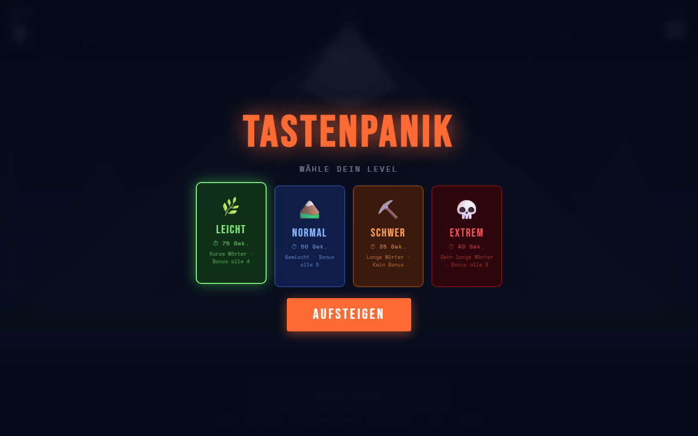
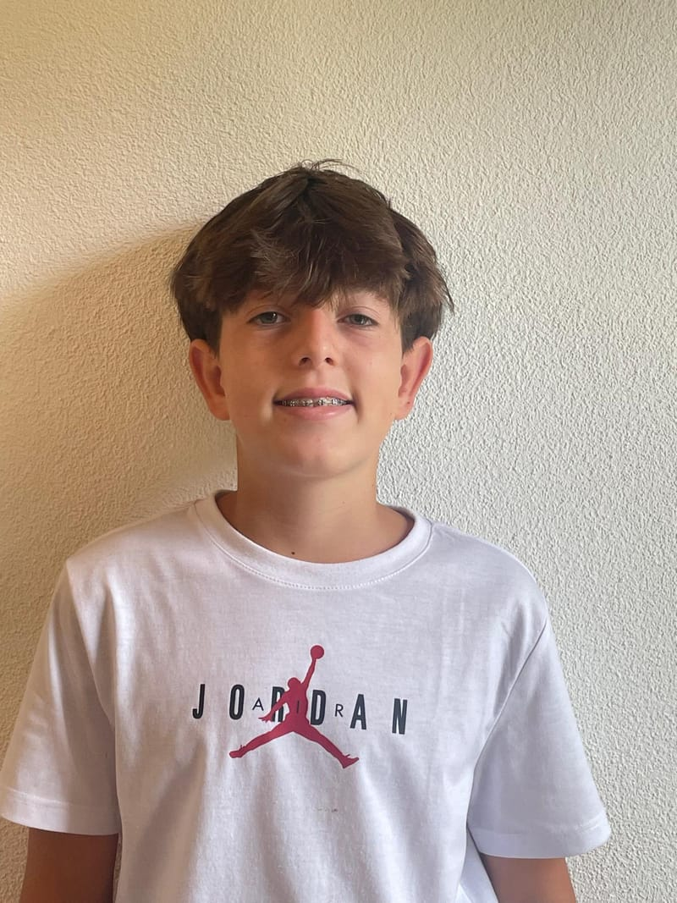
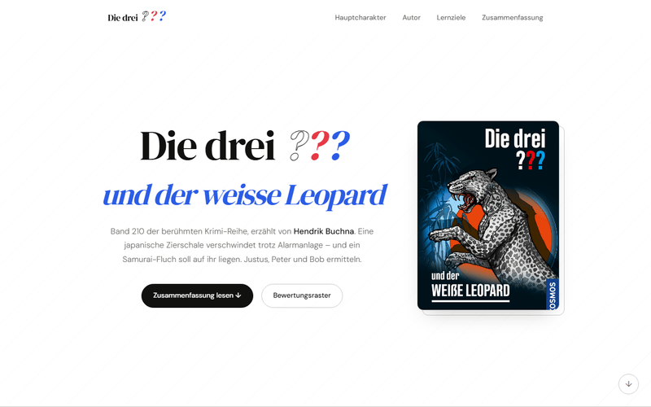
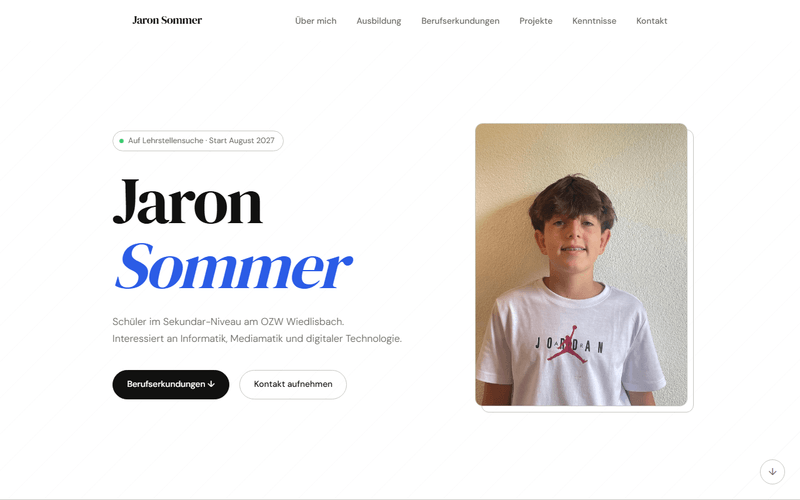

TastenPanik
Browserbasiertes Tipp-Spiel: angezeigte Wörter so schnell wie möglich eintippen, um einen Bergsteiger den Gipfel hinaufzubewegen. Vier Schwierigkeitsstufen von Leicht bis Extrem.
Schüler im Sekundar-Niveau am OZW Wiedlisbach.
Interessiert an Automatisierung, Programmierung und Mediamatik.

Über mich
Ich bin Jaron Sommer, 14 Jahre alt, und wohne in Wiedlisbach im Kanton Bern. Seit der 7. Klasse besuche ich das Oberstufenzentrum Wiedlisbach auf dem Sekundar-Niveau.
Mein Vater hat ursprünglich eine Lehre als Automatiker gemacht und arbeitet heute als Softwareentwickler – so bin ich früh sowohl mit Technik als auch mit Programmierung in Berührung gekommen. Nach mehreren Schnupperlehren, Zukunftstagen und Infoanlässen interessiere ich mich besonders für den Beruf Automatiker EFZ sowie für den Beruf Informatiker mit der Fachrichtung Applikationsentwicklung.
Neben der Schule arbeite ich wöchentlich auf dem Bauernhof Walki in Wiedlisbach – das hat mir Verlässlichkeit, Eigenverantwortung und echten Arbeitseinsatz beigebracht.
Werdegang
🎓 Ausbildung
💼 Berufserfahrung
Praxis & Erkundung
Eigene Arbeiten

Browserbasiertes Tipp-Spiel: angezeigte Wörter so schnell wie möglich eintippen, um einen Bergsteiger den Gipfel hinaufzubewegen. Vier Schwierigkeitsstufen von Leicht bis Extrem.

Schulprojekt-Webseite zur Buchvorstellung „Die drei ??? und der weisse Leopard". Mit Charakter-Profilen, Inhaltsangabe und interaktivem Bewertungsraster samt automatischer Notenberechnung.

Meine persönliche Portfolio-Seite für die Lehrstellensuche. Single-Page-Aufbau ohne Framework, mit Scroll-Reveal, Hamburger-Menü, responsivem Layout und eigenem Print-Stylesheet für PDF-Export.
Kompetenzen
Sprachen
IT & Tools
Interessen & Hobbys
Kontakt
Gerne beantworte ich Ihre Fragen zu meiner Bewerbung – schreiben Sie mir einfach eine E-Mail. Aktuelles Zeugnis auf Anfrage.
✉ E-Mail schreibenE-Mail öffnet Ihren Mail-Client · PDF nutzt den Druckdialog